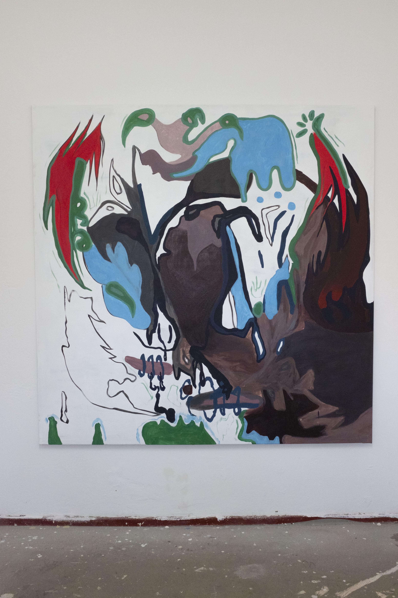

Untitled is massive, abstract and colorful but not contrasted. Written with techno in mind, it shows the importance of the auditory experience because of its repercussions on the painted gestures. It is a kind of real-time auditory experimentation by which design, colors and movements adapt to and are changed by sounds. It depicts scenes from digital heritage in a metaphoric way, mixing landscapes, organic forms, dirty textures, sensual colored patterns. Resembling body infections, 3D sculptures, atoms or anatomical limbs

Untitled, 2020, acrylic on canvas, 160 x 150 cm

About Last Night, 2020, acrylic on canvas, 200 x 200 cm

Bones, 2020, acrylic on canvas, 50 x 70 cm
Anti-Capitalism
Serie of painting who talks rather of medias, famous actress, rapers productors, metoo, gafam

Big Firms, 2020, acrylic on canvas, 200 x 200 cm